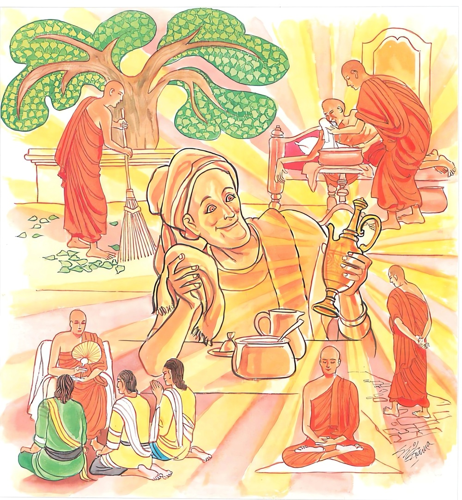

18-2 ශ්රද්ධාවත් බ්රාහ්මණයෙක්
මෙම කතාව ධම්මපද අටුවාවෙන් ද කියවන්න.
අනුපුබ්බෙන මෙධාවී ථොකථොකං ඛණෙ ඛණෙ
කම්මාරො රජතස්සෙව නිද්ධමෙ මලමත්තනො.
(ධර්මොජස්ප්රඥායෙන් සමන්විත) ප්රාඥ තෙම ක්ෂණක්ෂණයෙහි (ලද ලද අවකාශයෙහි) මඳ මඳ කොට කරන්නේ, ස්වර්ණයේ ආගන්තුක වූ කෘත්රිම දෝෂ දවන රන්කරුවෙකු මෙන්, තමාගේ කෙලෙස්මල දුරු කරන්නේ ය.

එක් දවසක් එක්තරා බ්රාහ්මණයෙක් උදෑසන ම ගෙන් නික්ම ගොස් භික්ෂූන් වහන්සේලා පිඬු සිඟා යන්නට සිවුරු පොරවනු බලා සිටියේ ය. උන්වහන්සේලා සිවුරු පෙරැවූවෝ තණකොළ බහුල ව වැඩී තුබූ බිම්පෙදෙසක සිට ය. එහි දී එක් නමක් සිවුරු පොරවද්දී උන්වහන්සේගේ සිවුරෙහි කොන් තණකොළවල ගැටීමෙන් පින්නෙන් තෙමී ගියේ ය. ඒ දුටු බමුණා පසුදා උදෑසන උදැල්ලක් ගෙණ ගොස් එතැන තණකොළ සැස බැහැරලා කමතක් සේ පිළියෙල කෙළේ ය. භික්ෂූන් පසුදාත් එතැනට පැමිණ සිවුරු පොරවනු බලා සිටි ඔහු එදා එක් නමකගේ සිවුරෙහි කොණක් බිම ගැටී පස් තැවෙරෙණු දැක “වැලි ගෙණවුත් මෙතැන පිරවිය යුතු ය”යි සිතා වැලි ගෙණවුත් එතරන විසිරු වී ය. තවත් දවසක් පෙරවරුයෙහි තද අව්වේ සිට සිවුරු පොරවන භික්ෂූන්ගේ සිරුරුවලින් ඩහදිය ගලනු දැක එදා එහි මඩුවක් තැන වී ය. නැවැත දවසක් තද වැස්සේ තෙමි තෙමී සිවුරු පොරවන භික්ෂූන්ගේ සිවුරු තෙමී ගියවුන් දැක “මෙහි මා ශාලාවක කරවිය යුතු ය” ශාලාවක් කරවී ය. එය පූජා කිරීමේ උත්සවයට බුද්ධ ප්රමුඛ මහාසඞ්ගයා වහන්සේට ආරාධනා කොට වැඩමවා ගෙණ ශාලාවෙහි ඇතුළත පිටත දෙක්හි උන්වහන්සේලා වඩා හිඳුවා දන් වැළඳ වී ය. වළඳවා අවසන්හි අනුමෙවෙනි බණ අසන්නට පාත්රය ගෙණ “ස්වාමීනී! මම පළමු කොට මෙතැන වැඩී තුබූ තණකොළ වල් පැලෑටි උදුරා බැහැර කොට කමතක් සේ මෙතැන පිළියෙල කෙළෙමි, එසේ කෙළෙම් මෙතැන රැඳී සිවුරු පොරවන භික්ෂූන් වහන්සේලාගේ සිවුරුවල කොන් තණකොළ මතුයෙහි ගැටී පින්නෙන් තෙමී ගියවුන් දැක ය, නැවැත මෙතැන වැලි ගෙණවුත් වැතුරුයෙම් සිවුරුකොන් පස් තැවරී කිලිටි වනබව දැකීමෙනි, තෙවනවර මෙතැන තද අව්වේ සිට සිවුරු පොරවන භික්ෂූන්ගේ සිරුරුවලින් ගලනා ඩහදිය දැක මඩුවක් කරවීමි, නැවැත දවසක් තද වැස්සේ තෙමි තෙමී සිවුරු වලඳන භික්ෂූන් දැක මේ ශාලාව ගොඩ නැංවීමි”යි සියලු තොරතුරු දන්වා සිටියේ ය.
ඉක්බිති බුදුරජානන් වහන්සේ ඔහුගේ කතාව අසා “බ්රාහ්මණ! නුවණැත්තේ හැම මොහොතක් පාසා මද මද විසින් පින් කරණුයේ පිළිවෙළින් තමන් පිළිබඳ සියලු අකුසල මුල් සිඳ හරී ය”යි වදාරා මේ ධර්මදේශනාව කළ සේක.
අනුපුබ්බෙන මෙධාවී ථොකථොකං ඛණෙ ඛණෙ,
කම්මාරො රජතස්සෙව නිද්ධමෙ මලමත්තනොති.
නුවණැත්තේ පිළිවෙළින් කෙණෙහි කෙණෙහි මද මද කොට පින් කරන්නේ, රන්වල ඇති මල දවා හරිණ රන්කරුවකු මෙන් තමාගේ කෙලෙස්මල දුරු කරන්නේ ය.
අනුපුබ්බෙන මෙධාවී = නුවණැත්තේ පිළිවෙළින්.
පෙර යම් ලෙසකින් කරණ ලද නම් ඉදිරියෙහි ඒ ලෙසින් කිරීම අනුපුබ්බ නම්. “පුබ්බස්ස අනුරූපො = අනුපුබ්බං” යනු දන්නේ ය. “යථා කතං තථා කරණන්ති අත්ථො” යනු ටීකායි. මෙධා නම් වූ නුවණ ඇතියේ මෙධාවී. [1]
ථොක ථොකං = ටික ටික මඳ මඳ කොට.
ථොක යනු ටික - බිඳ යන අරුත් ඇත්තේ ය. එබඳු එක් ම අරුත් ඇති ශබ්ද දෙකක් එකයෝග වූ කල්හි අධිකාර්ත්ථයෙක් ඉන් ලැබෙන්නේ ය. එහෙයින් ථොකථොකං යන මෙහි අරුත් ‘ඉතාටික විසින්’යි ගත වරද නැත.
ඛණෙ ඛණෙ = ක්ෂණයෙහි ක්ෂණයෙහි ඉඩ ලද ලද ඇසිල්ලෙහි.
දස අසුරුසණක් පමණ කාලය ඛණ නමි. සත්ත්වයන්ගේ ආයුකාලයෙන් ක්ෂණමාත්රයක් ගත වූ කල්හි එදා ආයුෂයාගේ එක්තරා පමණකින් පිරිහීමෙක් වේ. “සත්තානං ආයු ඛීයති හායති එත්ථාති = ඛණො” යනු කීයේ එහෙයිනි.
කම්මාරො රජතල්ල ඉව = රන්මල දවා හරිණ රන්කරු මෙන්.
“යථා සුවණ්ණකාරො එකවාරං එම සුවණ්ණං තාපෙත්වා කොට්ටෙත්වා මලං නීහරිත්වා පිලන්ධනවිකතිං කාතුං න සක්කොති, පුනපපුනං තාපෙන්තො කොට්ටෙන්තො පන නීහරති තතො නෙකවිධං පිලන්ධනවිකතිං කරොති” රන්කරු එක්වරක්ම රන් කෝවයෙහි ලා තවා තළා රන්හි වූ මලකඩ හැර නන්වැදෑරුම් රන් අබරණ කරන්නට සමර්ත්ථ නො වේ. එහු එය නැවැත නැවැත කෝවයෙහි ලා තවා තළා රන් මල හැර පිරිසිදු කොට ඉන්පසු තමන් කැමැති සේ එයින් නොයෙක් පලඳනා කරන්නේ ය, යනු පාලිපාඨයෙහි අරුත්.
කම්මාර නම්: රන්රිදී ආදී වූ ලොහකර්මාන්තයෙහි යෙදුනේ ය. “ලොහකිච්චං කරෝති = කම්මාරො” යනු විවෘතියි.
රජත නම්: සත් රුවන් අතුරෙහි ගැණෙන එක්තරා ලොහයෙකි. රන් - රිදී - මුතු - මැණික් වෙරළු - වීදුරු - පබළු යන මේ ය සත්රුවන්. එහෙත් මෙහිලා රජත ශබ්දයෙන් සවර්ණ ගැණෙන්නේ ය.
නිද්ධමෙ මලං අත්තනො = තමාගේ කෙලෙස්මල දුරු කරන්නේ ය.
රන්කරු යට කියූ සේ ක්රමයෙන් රන් පිරිසිදු කොට එයින් නන් වැදෑරුම් පලඳනා කරන්නා සේ නුවණැති මිනිසා පුන පුනා හැම මොහොතෙහි මදින් මද පින් කිරීමෙන් සිය සතන්හි නගිනා රාගාදී වූ හැම කිලිටි දුරු කරන්නේ ය. එකල්හි හේ නසාලූ මල ඇත්තේ කෙලෙස් නැත්තේ වේ.
ධර්මදේශනාවගේ අවසානයෙහි බ්රාහ්මණ තෙමේ සෝවන්පලයෙහි පිහිටියේ ය. ධර්මදේශනා තොමෝ මහජනයාට ද වැඩ සහිත වූ ය.
අන්යතරබ්රාහ්මණ වස්තුව නිමි.
-
2-3 ‘දීපං කසිරාථ මෙධාවී’ යනු බලනු. ↑